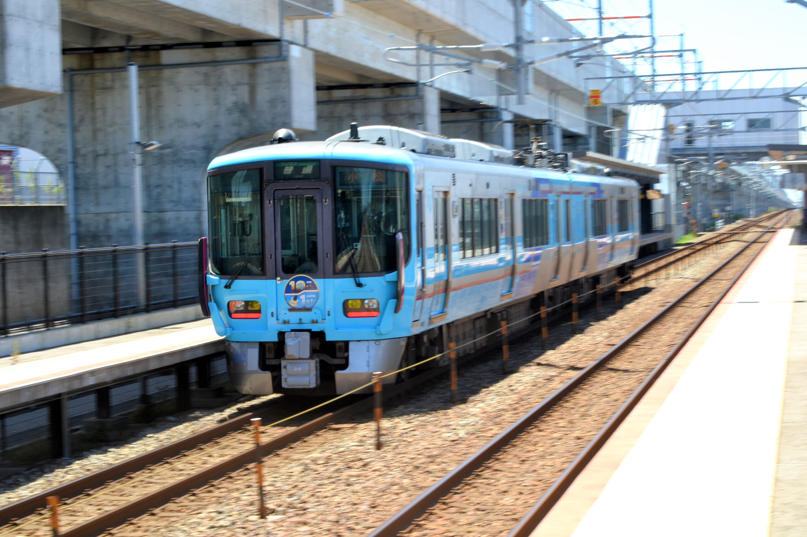
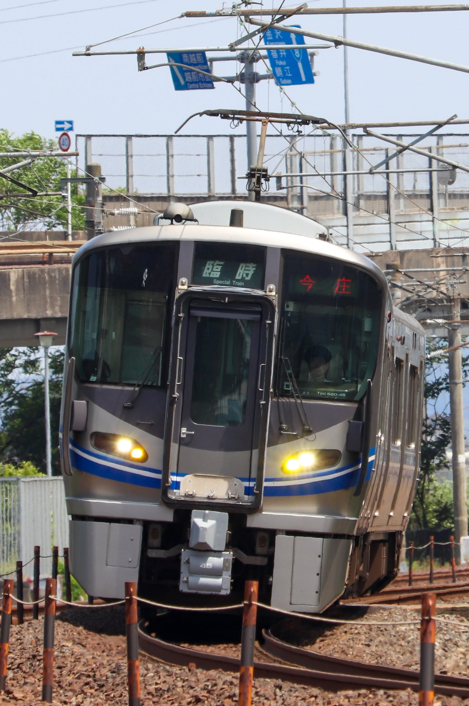
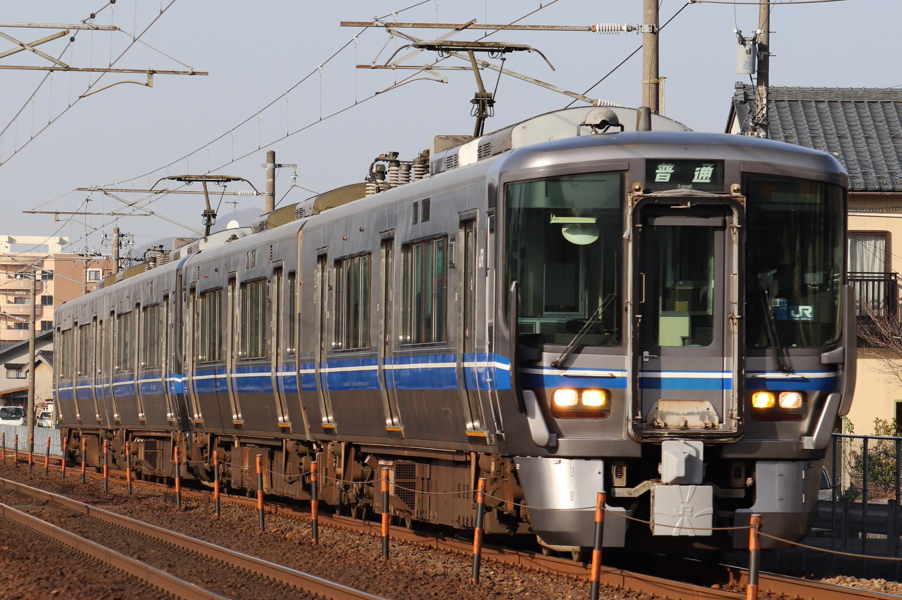

521系電車写真集
撮影者:akiaki 題名:521系
撮影日:2025/07/19 撮影場所:西松任駅 時間帯:昼
カメラ:Nikon D3100 レンズ:AF-S DX NIKKOR 18-55mm f/3.5-5.6G VR
コメント:初心者みたいな写真
撮影者:いなまに 題名:最初で最後の青帯今庄行き
撮影日:ー 撮影場所:ー 時間帯:昼
カメラ:Canon EOS Kiss X9 レンズ:EF-S55-250mm
コメント:
撮影者:金沢パン 題名:E編成晴れ舞台
撮影日:2023/3/11 撮影場所:ー 時間帯:夕
カメラ:Canon EOS kiss X9i レンズ:EF-S 55-250mm F4-5.6 IS STM
コメント:サンドームでのコンサートに伴う臨時列車に使用するG、J編成の2両運用を重連で代走するE編成です。
撮影者:匿名 題名:ー
撮影日:ー 撮影場所:大聖寺～牛ノ谷 時間帯:夕
カメラ:Nikon D5100 レンズ:150mm
コメント:ー

撮影者:匿名 題名:ー
撮影日:2021/3/7 撮影場所:金沢～西金沢 時間帯:朝
カメラ:Nikon D5100 レンズ:150mm
コメント:ー

撮影者:AFB 題名:ー
撮影日:4/6 撮影場所:芦原温泉〜丸岡 時間帯:昼
カメラ:Nikon D5300 レンズ:SIGMA
コメント:ー